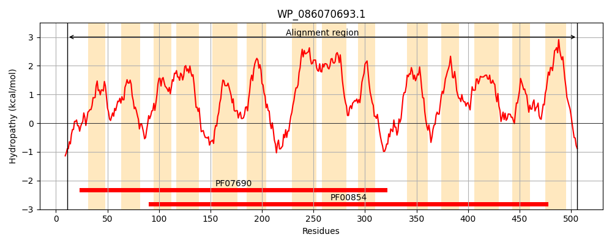
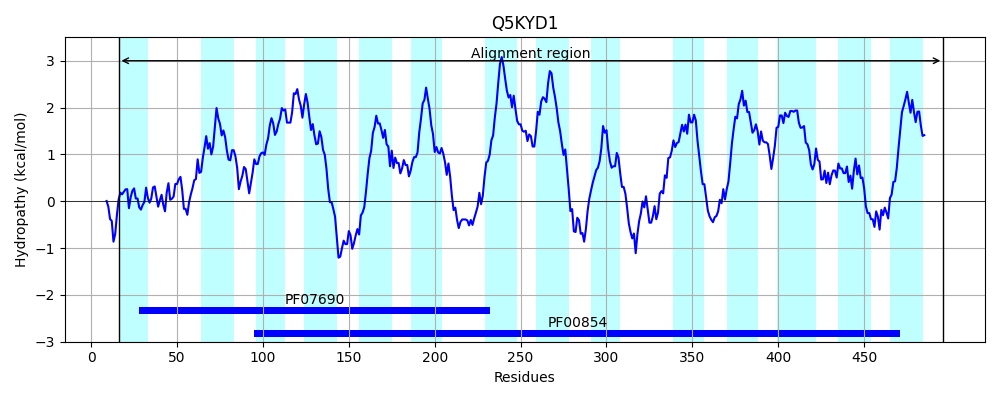
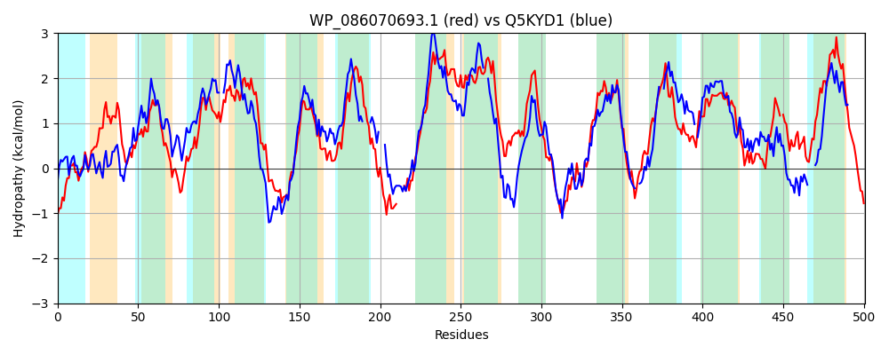

Hit Accession: Q5KYD1
Hit TCID: 2.A.17.1.7
Hit Description: gnl|BL_ORD_ID|14405 gnl|TC-DB|Q5KYD1|2.A.17.1.7 Di-tripeptide ABC transporter (Permease) OS=Geobacillus kaustophilus (strain HTA426) GN=GK2020 PE=3 SV=1
Mach Len: 501
e:0.000000
Query TMS Count : 14
Hit TMS Count: 14
TMS-Overlap Score: 8.700000
Predicted Substrates:CHEBI:7990;peptide
BLAST Alignment:
Score: 805 , Bit scores: 314 bits, E-value: 8.1e-102, Alignment length: 501, Percentage identity: 36
Query: 11 RTFFGHPYPLGSLFFTEMWERFSFYGIRPLLILFMAATVYDGGMGLARENASAIVGIFAGSMYLAALPGGWLADNWLGQQRAVWYGSILIALGHLSIALSAWLGNDLFFIGLMFIVLGSGLFKTCISVMVGTLYKKGDARRDGGFSLFYMGINIGSFIAPLISGWLIKSHGWHWGFGIGGIGMLVALVIFRVFAVPSMKRYDAEVGLDSTW----NSPVAKKNGVGAWLLALALGVAVLVTLISLGTIVINPVAVASALVYVIAASVALYFIWLFVFAGLNRKERARLLVCFILLVSAAFFWSAFEQKPTSFNLFANDYTNRMIGDFEIPAVWFQSINALFIILLAPVFSWAWPALARKNVRPGSMTKFVIGILCAAAGFGLMMLAAQNVLSNGGAGVSPLWLVGSILMLTLGELCLSPIGLATMTLLAPERMRGQMMGLWFCASALGN-LAAGLIGGHVKADQLSLLPDLFARCSIALLICAAVLAVLIVPVRRMLENSR 506
R FFGHP L +LFFTE WERFS+YG+R +L+ +M V GG+GL A AI+ I+ +Y++ + GGWLAD G RAV+YG +LI GH+++A+ G F+ + IVLG+GL K +S +VG +YK GD RRD GFS+FYMGIN+G+F+APL+ G + +H GFG+ +GM + LV+F V + K+ +GL T+ +P KK + + +L LI G + ++ +I +YF+ ++ +ER+R++ L V++A FW+ EQ T +A+ T + + WFQS+N LFII+LAPVF+W W L ++ +P KF +G+L AG +++ LS GG V P+WLV S ++ LGELCLSP+GL+ T LAP Q M LWF ++A + A L+ + ++ + F A L+ +L + + R+++ R
Sbjct: 16 RGFFGHPKGLFTLFFTEFWERFSYYGMRAILVYYMYYEVSKGGLGLDEHLALAIMSIYGALVYMSGIIGGWLADRVFGTSRAVFYGGLLIMAGHIALAIPG--GVAALFVSMALIVLGTGLLKPNVSSIVGDMYKPGDDRRDAGFSIFYMGINLGAFLAPLVVGTAGMKYNFHLGFGLAAVGMFLGLVVF----VATRKK---NLGLAGTYVPNPLTPAEKKKAAAIMAVGAVVIAVLLAILIPNGWFTVETFISLVGILGIIIP--IIYFVVMYRSPKTTAEERSRVIAYIPLFVASAMFWAIQEQGSTILANYADKRTQLDVAGIHLSPAWFQSLNPLFIIILAPVFAWMWVKLGKR--QPTIPQKFALGLL--FAGLSFIVILVPGHLSGGGL-VHPIWLVLSYFIVVLGELCLSPVGLSATTKLAPAAFSAQTMSLWFLSNAAAQAINAQLVRFYTPENETA----YFGTIGGAALVLGLILLAIAPRIGRLMKGIR 496 | Protein Hydropathy Plots: |
|---|
|  |  |
Pairwise Alignment-Hydropathy Plot:
|
|---|
|  |